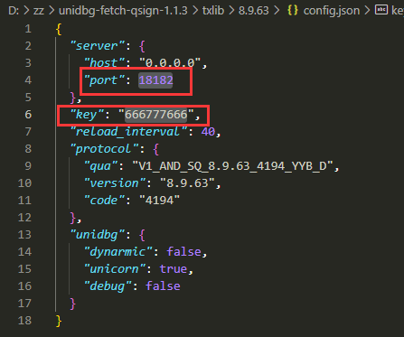

onebots实践记录
本文以zz提供的《assttyys使用onebots推送》为基础进行实践操。
运行环境
安装unidbg-fetch-qsign
- 下载并解压unidbg-fetch-qsign
- 进入unidbg-fetch-qsign文件夹
- 修改txlib/8.9.70[3]/config.json下的端口与key，端口修改为非常用端口，key用于授权使用。

4. 运行qsign。bash bin/unidbg-fetch-qsign --basePath=txlib/8.9.70
安装运行onebots
- 新建一个文件夹
- node初始化，输入命令：
npm init
一路回车
3. 安装onebots，输入命令npm i onebots
4. 目录下创建index.js文件，输入以下代码：const { createApp } = require('onebots'); createApp('config.yaml').start()
5. 运行index，输入命令：node index.js
6. 程序会自动生成config.yaml文件，打开文件，配置机器人参数。
7. 再次运行index.js文件，首次配置可以需要输入ticket，可以参考https://blog.csdn.net/m0_51607907/article/details/124244034
- 安装jdk将安装目录设定在系统盘之外，jdk20安装程序应当会自动配置path。进入命令行，输入java，如果不能正常运行，请手动配置系统环境变量。可以参考：https://blog.csdn.net/qq_38436214/article/details/105071088 ↩
- 请注意：unidbg-fetch-qsign与onebots使用的plateform需要匹配，目前版本onebots的plateform版本为安卓apad 8.9.70，对应的unidbg-fetch-qsign版本为1.1.6。 ↩
- 此处即是安卓apad8.9.70相关的配置文件。 ↩
onebots实践记录
https://kuhai001.github.io/2023/08/21/onebots/